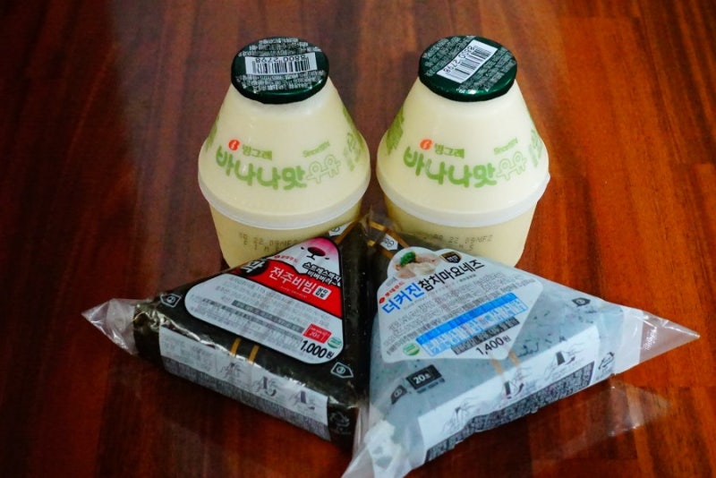

삼각김밥 + 바나나우유
가볍게 한 끼 때울 때 실패가 적은 조합입니다. 삼각김밥은 속 재료가 다양하니 취향에 맞게 고르세요.
살 것 (제품명 참고)
삼각김밥(참치마요·김치·스파이시 등) · 바나나맛 우유 · 선택: 김가루/소스 별도 상품, 물티슈
먹는 방법
1. 삼각김밥 포장의 ‘1 → 2 → 3’ 번호를 따라 비닐을 벗깁니다. 김이 축축해지지 않게 먹기 직전에 개봉하세요.
2. 한입에 김·밥·속이 같이 들어가게 베어 먹고, 사이사이에 바나나우유를 마십니다.
3. 매콤한 속을 골랐다면 우유가 매운맛을 가라앉혀 줍니다. 더 든든하게 먹고 싶으면 계란이나 핫바를 추가하세요.
팁
아침·심야에는 인기 속이 품절될 수 있습니다. 유통기한을 확인하고, 전자레인지용 표시가 있는 제품만 데우세요.
가볍게 한 끼 때울 때 실패가 적은 조합입니다. 삼각김밥은 속 재료가 다양하니 취향에 맞게 고르세요.
살 것 (제품명 참고)
삼각김밥(참치마요·김치·스파이시 등) · 바나나맛 우유 · 선택: 김가루/소스 별도 상품, 물티슈
먹는 방법
- 삼각김밥 포장의 ‘1 → 2 → 3’ 번호를 따라 비닐을 벗깁니다. 김이 축축해지지 않게 먹기 직전에 개봉하세요.
- 한입에 김·밥·속이 같이 들어가게 베어 먹고, 사이사이에 바나나우유를 마십니다.
- 매콤한 속을 골랐다면 우유가 매운맛을 가라앉혀 줍니다. 더 든든하게 먹고 싶으면 계란이나 핫바를 추가하세요.
팁
아침·심야에는 인기 속이 품절될 수 있습니다. 유통기한을 확인하고, 전자레인지용 표시가 있는 제품만 데우세요.